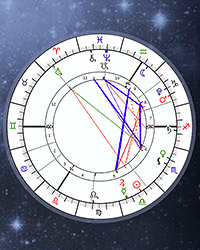
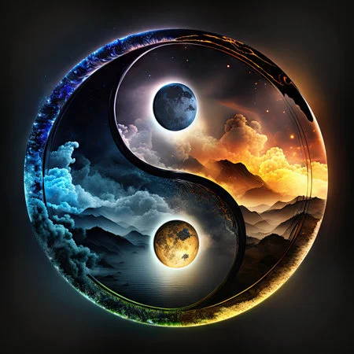

The "multiple signs" that make up your chart depend on where and when you were born, and how all the planets were positioned at that given time. All the planets ranging from the Sun to Neptune are given in the birth chart with a corresponding zodiac sign. This is an example of what a Natal Chart looks like.

You can even calculate your own birth chart that will not only tell you all the different signs that make up your chart, but an explanation to all of them as well.
A personal favorite website to calcuate natal charts is here. This website seems to be profoundly accurate and gives you a great idea and perception on oneself, astrologically.
Compatability
Some people know astrology for their compatability aspect. Some astrological signs are said to go better with each other than others. Every sign has an opposite sign, which is sometimes deemed as their best match.
Essentially, their opposite sign are very similar and very different in the sense that they make up what the other may lack.They posses every quality needed to create perfect union and completion.
Of course, don't not engage in relationships with someone if you're sign isn't compatible. Astrology is vague and broad for a reason. But some other signs go better if they are in the same element.Like fire and fire (Aries and Sagiitarius) or (Geminis and Libras) both are air signs.
Synastry

Did you know that with the information from your Natal Chart, and your significant other, you can combine your charts 'side by side' to receive the ultimate compatbility of both of your charts.
You can find these out through the above sights. On Astro-Seek they have a menu at the top displaying "Love Compatability" where you should find the calculator to determine your astrological compatability.The Synastry Chart will give you more in depth reasonings on why or why not you two are not compatible astrologically.
Personality
According to astrology, the position of celestial bodies, which are both planets and other stars, of one's birth time, can determine certain personality traits and likelihoods.
Let's take the sign of Leo, they are said to be confident, extremely loving, and are natural leaders. There are a lot of notions and assumptions that most leos are 'narcissistic' and egotistical. This may be true for most Leos, but it doesn't mean all of them brag about themselves, and want everything to be about them all the time.
Some may just love to talk about themselves or their probelms, but don't like to socialize and be free in front of everyone. Some tendencies do line up with most signs, like this one, but usually not in the same exact way.